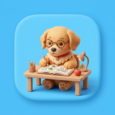

考研上岸 · 金毛伴学
PRO 云端版
考研英语（一）5,619 词大纲 · 艾宾浩斯智能记忆调度
🎯 距统考初试
--
天
⚙️ 个性化系统与学习设置
离线可用 · 支持免费云端漫游—已学习词数
—已掌握
—连续打卡
—复习完成率
—薄弱词
艾宾浩斯遗忘曲线
不复习时记忆快速衰减；本应用按 1 → 3 → 7 → 15 → 30 → 60 天安排复习，每次复习都会把记忆拉回高位、且衰减越来越慢
不复习的自然遗忘按应用节奏复习的记忆保持复习时间点
记忆等级分布
按你对每个词的评分累计（很熟 × 多次 → 掌握）
复习日程
按每词的下次复习时间统计
到期词会在「背单词」页自动优先进入队列，无需手动安排。
近 30 天学习量
每日完成词数；主题色为今日
薄弱词榜
多次评「不认识」的词；点击查看词条
最近学习
最近评过分的词